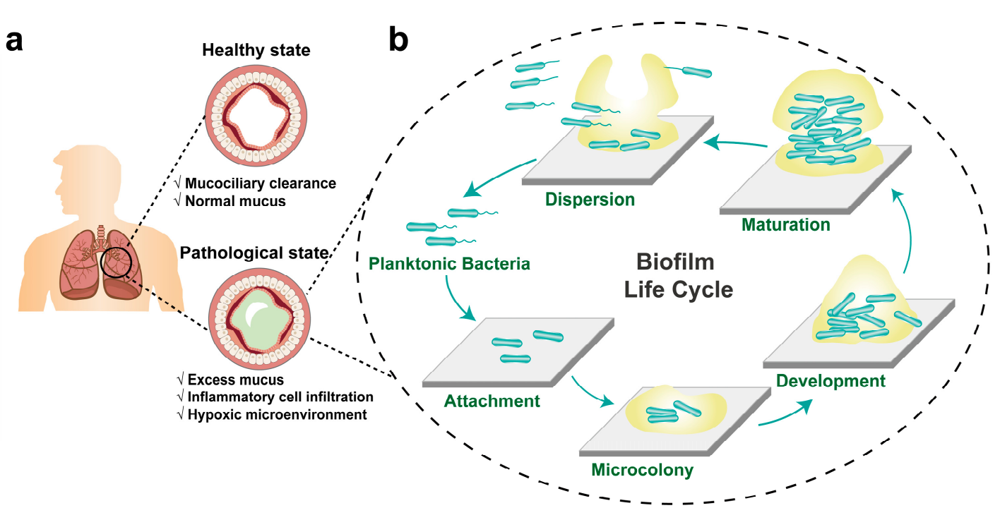
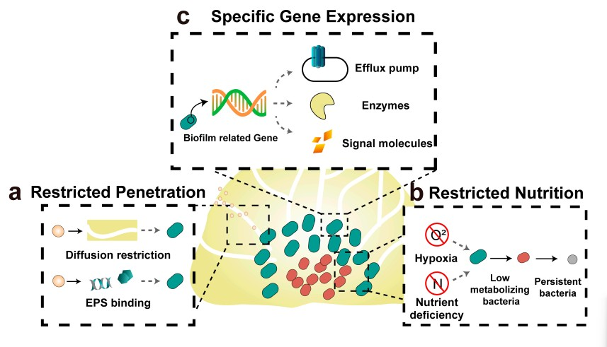
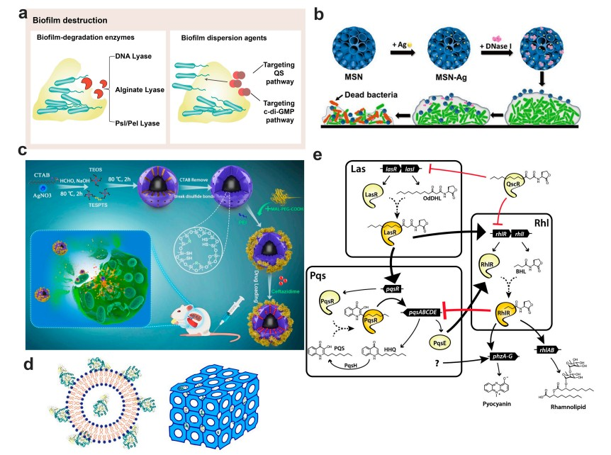
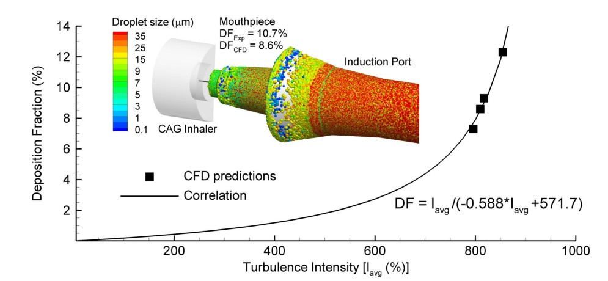
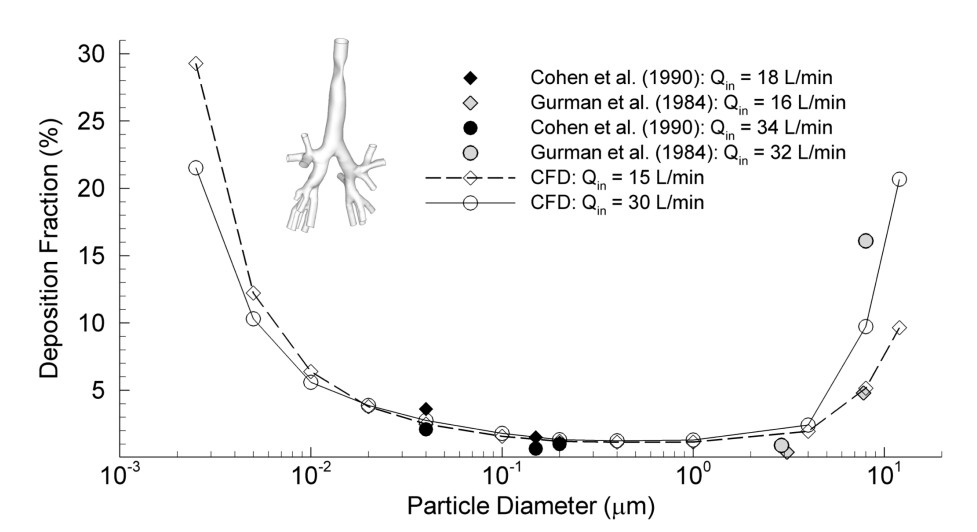
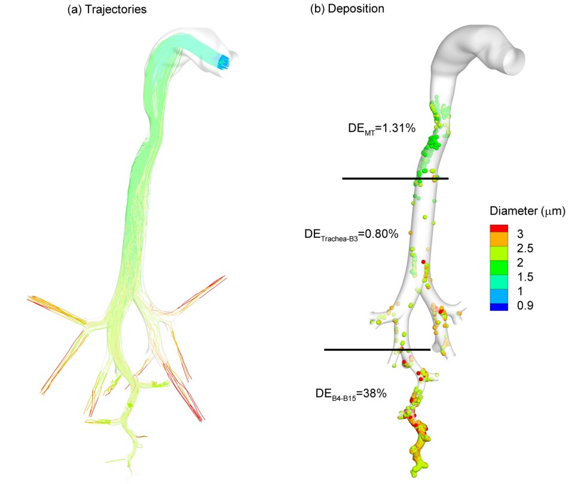
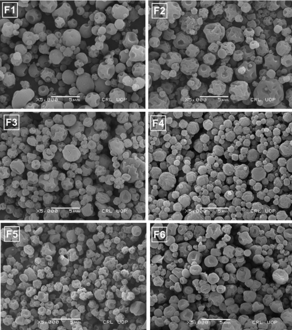
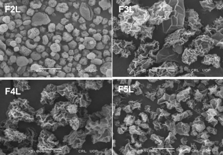
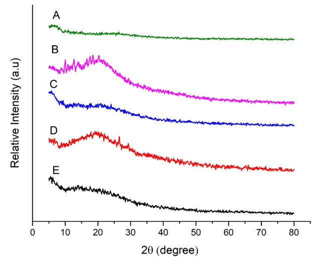
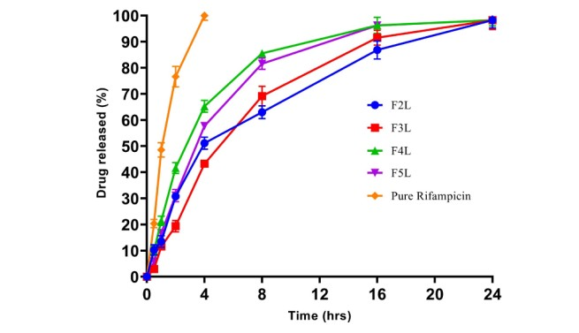

Comparative Review of Three Recent Scientific Papers on Nanomedicine, CFD Modeling, and Spray-Dried Microparticles.
Students: Eslam Hassan, Thai Anh
University: FH Münster
Course: Aerosols and Nano Technology
Date: 29/6/2026
Direct delivery to the infection site reduces required systemic doses, bypasses first-pass metabolism, and minimizes systemic side effects. Crucial for treating CF, COPD, and Tuberculosis.
The lungs feature formidable defenses: anatomical branching, macrophage phagocytosis, and highly viscoelastic airway mucus (mesh pore size ~200nm) that traps foreign particles.
Accounting for 65% of bacterial infections. Bacteria in EPS matrices face restricted penetration and exhibit a 1000-fold increase in antibiotic resistance, causing chronic intractable infections.
Guo, Y., et al. (2023) • Pharmaceutics
Chronic lung diseases (like Cystic Fibrosis) result in persistent infections due to mucoid bacterial biofilm formation. The EPS matrix physically protects bacteria from immune systems and antibiotics.
Objective: To review recent advances in nanoparticulate drug delivery systems designed to bypass airway mucus, penetrate the EPS biomatrix, and eradicate respiratory bacterial biofilms.

Shows airway mucus alteration under pathological conditions (CF/COPD) and the 5-stage lifecycle of bacterial biofilms from attachment to dispersion.
Extracted from Guo et al., 2023

Depicts diffusion restriction by EPS, emergence of persistent bacteria in hypoxic/nutrient-deficient inner zones, and specific gene expressions (efflux pumps).
Extracted from Guo et al., 2023

Illustrates combined antibacterial mechanisms: biofilm-degrading enzymes, QS signaling interference, and targeted metal nanoparticles (MSN-Ag).
Extracted from Guo et al., 2023
Longest, P. W., & Holbrook, L. T. (2012) • Adv. Drug Delivery Reviews
While traditional 1-D models estimate regional lung deposition, they cannot capture complex localized physics (spray momentum, turbulence, sub-millimeter hot spots).
Objective: To demonstrate the superiority of 3-D Computational Fluid Dynamics (CFD) models in understanding aerosol transport and optimizing inhaler device designs from the mouth-throat to the alveolar region.
CFD proved that using sub-micron particles with warm saturated air (ECG) prevents extrathoracic deposition, growing inside the lungs to ~3 µm for optimal retention.

CFD correlation between Deposition Fraction (DF) and average turbulence intensity (Iavg) for a capillary aerosol generator (CAG).
Extracted from Longest & Holbrook, 2012

Comparison showing close agreement between 3-D CFD deposition predictions and in vitro experimental data in TB models.
Extracted from Longest & Holbrook, 2012

Simulation of sub-micron aerosols bypassing the extrathoracic region and growing via condensation for targeted deep lung delivery.
Extracted from Longest & Holbrook, 2012
Ahmad, M. S., et al. (2026) • ACS Omega
TB requires long-term, high-dose oral therapy. Rifampicin has poor bioavailability orally. Targeting the alveolar macrophages where M. tuberculosis replicates is critical.
Objective: Formulate carrier-free, spray-dried chitosan microparticles to achieve a high rifampicin payload with optimal aerodynamic performance for deep lung deposition.

Morphology of blank spray-dried chitosan microparticles showing surface wrinkles.

Altered morphology with spikes as rifampicin drug-to-polymer ratio increases.

Proof that spray-drying converts crystalline rifampicin into a highly soluble amorphous state.

Sustained release profile of rifampicin over 24h aiding long-term macrophage targeting.
| Parameter | Paper 1 (Nanotech) | Paper 2 (CFD) | Paper 3 (Microparticles) |
|---|---|---|---|
| Core Technology | Nanocarriers (Ag, Au, Lipids) | 3D Computational Modeling | Spray-Drying Fabrication |
| Target Dimension | Mucus / EPS Matrix (< 200nm) | Airways (Mouth to Alveoli) | Macrophages (2 - 6 µm) |
| Clinical Focus | CF / COPD Biofilms | Inhaler Optimization | Tuberculosis |
| Major Advantage | Disrupts biofilm defenses | Predicts local hot spots | High payload, DPI ready |
| Limitations | Systemic toxicity risks | Requires clinical validation | Agglomeration risk |
How these three studies complement each other in translating pulmonary medicine.
Paper 2 establishes the aerodynamic baseline and predicts ideal particle sizes for lung retention.
Paper 1 defines the functional chemistry needed to penetrate mucus and dissolve biofilms.
Paper 3 uses spray-drying to convert theories into tangible, high-payload DPI microparticles.
The culmination: high lung retention, eradicated biofilms, and cured pulmonary infections.
Inhalation provides a direct route for treating severe respiratory infections. Successful treatment requires bypassing mechanical (mucus) and biological (biofilm/macrophage) barriers simultaneously.
While CFD is precise, in vivo validations remain scarce. Nanoparticles show promise in vitro, but long-term pulmonary toxicity (e.g., metal accumulation) requires extensive clinical trials.